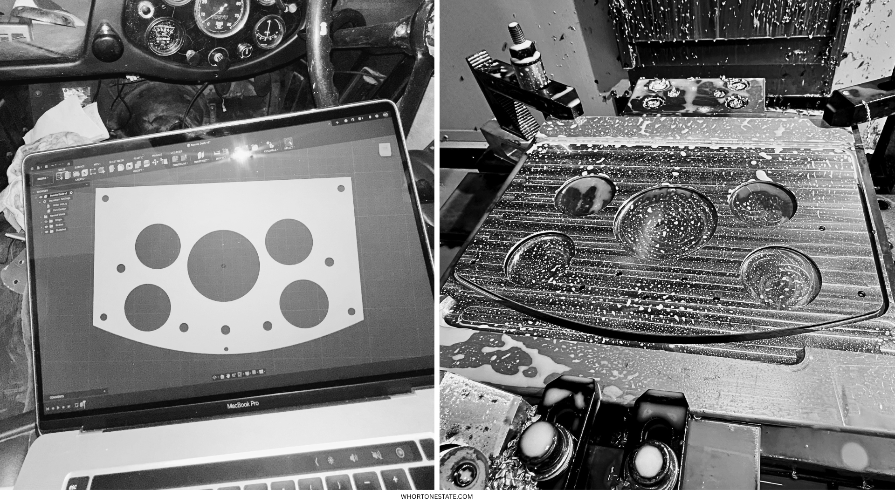
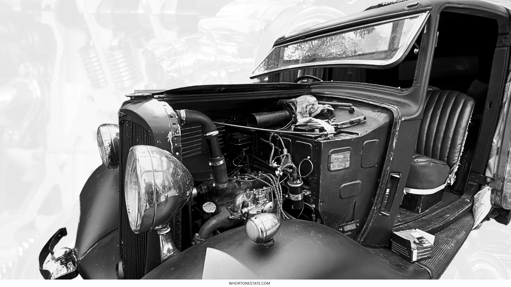
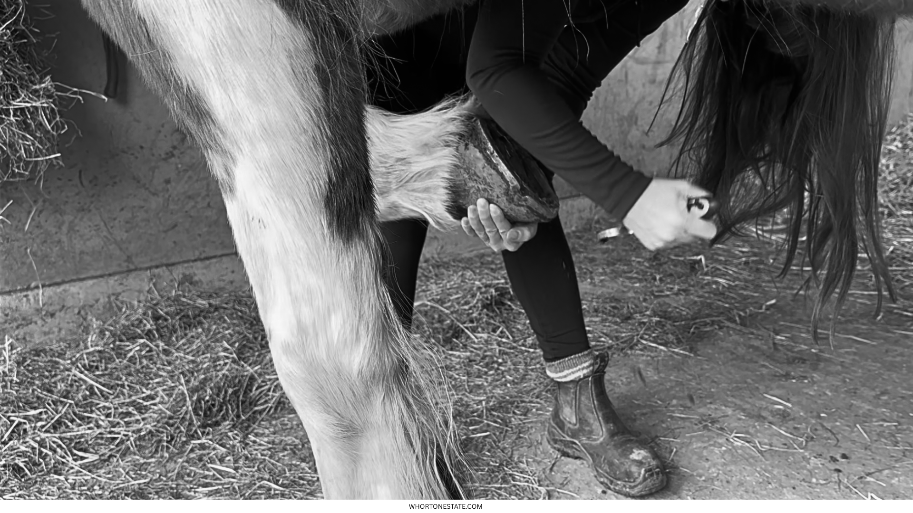

FIG 1.1 // TOOLPATH VECTOR MATRIX [X, Y, Z]
FIG 2.1 // REVERSE-ENGINEERED HUB ASSEMBLY
FIG 3.1 // COMPARTMENTAL PHARMACOKINETICS DATAWe work from first principles. Whether modeling an assembly component to sub-millimeter tolerances, tracking the exact structural load of a pre-war chassis, or parsing clinical indicators in modern veterinary medicine, the rule remains absolute: The data dictates the execution. True craftsmanship is defined by the absolute absence of decoration.